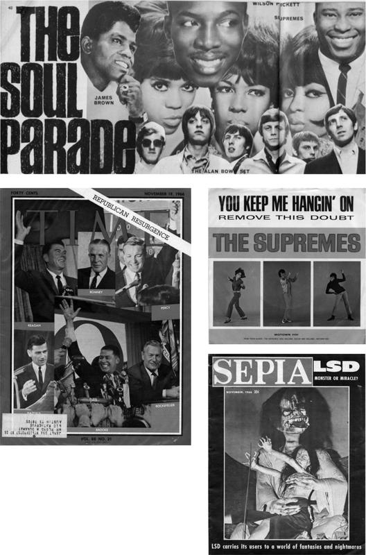

Good Vibrations: Motown and Soul in the UK, the Beach Boys and the Sunset Strip

‘It is way off beam to say that fans of R and B and Soul say it is the colour of a star’s skin that brings the elusive “soul” quality. Anyone who has seen opera performed with sensitivity and skill will agree that the depth of emotion and feeling doesn’t particularly hinge on the singer’s past suffering, but on his dramatic ability and acting power. We do maintain, however, that because American Negroes can only enter the entertainment field, and are denied opportunities to enter other fields, this pent-up talent will dominate the one area where they are allowed artistic expression.’
DAVE GODIN, letter to Record Mirror, 26 November 1966
On 1 November, Britain had a new #1. The morbid miasma of ‘Distant Drums’ had finally been dispelled, on 26 October, by a record so strong and so unexpected that it hit the country with all the force of a hurricane. The Four Tops’ ‘Reach Out I’ll Be There’ had received unprecedented pre-release raves earlier in the month: it was ‘a knockout disc’, ‘the most important record of the year’. Penny Valentine went even further: ‘If you have ever been lonely, if you have any soul or any heart at all, you must go and buy this disc now.’
The record begins with a flute fanfare, part ominous, part Near Eastern; a clicking rhythm guitar and rumbling bass set up a fast, syncopated rhythm. Levi Stubbs enters, near the top of his range, singing lyrics that gave the year’s dark preoccupations an entirely different spin: ‘And your life is filled with much confusion / Until happiness is just an illusion.’ Underscored by the Tops’ wordless exclamation under the first line, the song has an incredible forward drive, so much so that it dispenses with a middle eight in the headlong quest for resolution.
Poised between negativity (the verses) and reassurance (the chorus), the emotional switch-back of ‘Reach Out I’ll Be There’ demanded a full-blooded vocal and, after a decade of making records, Levi Stubbs delivered the performance of his life. You can hear the strain during the verses, as he drags out the phrasing, before emitting the briefest of exclamations – ‘Hah’ – as he dives into the chorus: ‘I’ll be there to love and comfort you.’
Sixties singles were designed for maximum impact. Whether it was a different vocal trick, added instrumentation or a key change, something had to happen in each verse that developed the intensity over two to three minutes. Most Motown artists were experts at ad-libbing, and in ‘Reach Out I’ll Be There’ Stubbs bridges the verse and chorus with an extra ‘reach out’. His voice cracks slightly, before he interjects ‘Just look over your shoulder!’ and the track explodes into the final chorus and fade.
‘Reach Out I’ll Be There’ had the ‘wow’ factor, not least because it was a radical departure from the usual Motown sound. It wasn’t just the lyric but the whole torque of the record. ‘Dylan was happening at the time,’ co-writer Lamont Dozier told author Marc Weingarten, ‘and the phrasing for “I’ll Be There” came from the way he sang. He’d do that thing (sings), “Heyy”, and “Heyy”, and “Heoww”, where he’d drag a phrase out, that I liked. The day we wrote it, I just began mumbling: “Now if you feel that you can’t go on, because your hope is gone …”’
Released in August after some internal disagreements, ‘Reach Out I’ll Be There’ reached #7 in the US charts in early October. The company was hitting an absolute peak, driven on by Berry Gordy’s injunction to his staff, issued in early July, that ‘we will release nothing less than Top Ten product on any artist. And, because the Supremes’ worldwide acceptance is greater than the other artists, on them we will release only #1 records.’
The first demand might have been impossible, but ‘You Can’t Hurry Love’ went to #1 in the US in September. ‘Reach Out I’ll Be There’ then hit the top. In early November, as ‘You Keep Me Hangin’ On’ was waiting in the wings, KRLA Beat noted what seemed like a conveyor belt: ‘1966 will undoubtedly be recorded as “The Year Of The Motown Sound” in pop history, as one after another of the Motown groups takes up residence in the Number One spot in the charts.’
On 15 October, the Four Tops’ record entered the UK chart at #15. The week before, Tony Hall had predicted that ‘Reach Out I’ll Be There’ would be the group’s ‘biggest success in Britain. It’s certainly one of the most commercial records they’ve ever made … The whole approach is much more pop-conscious than anything I can remember coming out of Hitsville. In fact, I think there’s a subtle change going on there. The Holland–Dozier–Holland team seems to have learned some new lessons. Perhaps from the British sound.’
Boosted by ecstatic reviews and constant pirate radio play, ‘Reach Out I’ll Be There’ hurtled up the UK charts. The Four Tops became bona fide pop stars – a slightly bewildering state of affairs for the group. On the phone to Detroit, Disc and Music Echo’s Bob Farmer found them ‘lazily swinging golf clubs on a local golf course, quite unconcerned that they have all America and England falling all over the place in ecstasy’. The article emphasised their married maturity: as Levi Stubbs admitted, ‘We are an adult act that appeal to a large age-group.’
The Four Tops were overtaken by events. Bowled over by the record, Brian Epstein quickly booked them as the first major pop attraction at the West End theatre he had leased, the Savile. When the group flew in for the 13 November booking, they were interviewed by Record Mirror, who found them in an understandably ebullient mood. ‘This is the most important record of our career,’ they told Norman Jopling. ‘We have been aiming for a number one record in Britain, and our writers and producers, Holland and Dozier, have been aiming for us too.’
Mindful of the Epstein connection, they talked about the Beatles: ‘They’ve done a lot for pop music. Before the English sound invaded the American charts, U.S. pop music was very dead-beat. There was no real tuneful music and the whole thing was stagnant. The British groups, and especially the Beatles, brought a big revival to the scene. Some of the Beatle tunes featured real chord changes and were genuinely good musical tunes. Good music became accepted. Would “Michelle” have been a hit before the Beatles? Of course not.’
On 13 November, the atmosphere in the Savile Theatre was electric. ‘Tony Hall introduced the Four Tops to a roar that would not have disgraced a Wembley crowd,’ wrote Penny Valentine. ‘The ceiling lights nearly jumped out of their sockets, and then there they were, grinning, moving, full of their music – the people we had been waiting for so long to see. Our hearts were theirs before they stepped on stage. By the time they left, our hands, feet and lungs were theirs too.’
From his onstage vantage point, Tony Hall observed that he’d never seen a British audience ‘behave in such a traditionally un-British manner. It was simply fantastic! … There’s something about Motown music that alone evokes such emotion and enjoyment. It’s today’s sound. Today’s spirit. Today’s “feel”.’ After the shows, Brian Epstein held a party at his Belgravia house: the guests included George and Pattie Harrison, John and Cynthia Lennon, Mick Jagger, Charlie Watts, Donovan, Georgie Fame, Vicki Wickham, Tony Hall and Eric Burdon.
With one unstoppable record, the Four Tops had vaulted to the very top. For a short but intense moment, they were the toast of the town. In the continuing vacuum following the disappearance of the Beatles, there was a demand for new culture leaders to take their place in a pop market habituated to a dominant presence. Dusty Springfield commented on this in November: ‘There is absolutely no definite trend on the British music scene. But then it is hard to say what constitutes a trend. It’s like saying margarine is going to take over the world.
‘The Beatles only happen once a lifetime with the sort of force and consistency that the Beatles had,’ she continued. ‘Things in the music field go full circle, just like fashion. It’s rather like keeping a pair of shoes for ten years and finding they’ve come into fashion again. It’s not a question of America having a greater musical talent – although they DO have a greater musical talent both in the creative and the technical production field – it’s in the general scene. At the moment, American records are of a better standard than British ones.’
By the last quarter of 1966, the energy had definitely ebbed away from Britain. Between the beginning of October and the end of the year, there would be only four #1 records in the UK; the same period in the US would see nine. The British chart had become stodgy and static. In contrast, the American Top 100 was dynamic and forward-looking, reflecting a resurgence influenced by the great British boom at the same time as it was determined to supersede it with home-grown artists and material.
‘Reach Out I’ll Be There’ was one of those records that pulled the culture along with it. Just as the Four Tops and Holland–Dozier–Holland took from the sharp end of white pop, so the leading white musicians of the day then lined up to pay due homage to a tricksy, complex gospel performance. This was a rare moment of unity, one that was encoded in the song itself, a mature, heartfelt statement that appealed to all ages. Instead of a sneer, it was an admission of darkness and a celebration of its transcendence through warmth, solidarity and empathy.
In that, it represented the very height of black American music, defined by Dave Godin as ‘a divergent culture which values other, abstract things like tenderness, generosity of spirit, of love. Why these records have found an echo in so many hearts – and I should also mention that it is mainly male hearts – is that men are brought up in our society to despise the feelings that these records represent. They may be brought up to despise them, but that doesn’t eradicate them. And there’s a recognition, like coming home, and a realisation that yes, this is how we should interact with one another. Yes, we should put a value on love.’
‘Reach Out I’ll Be There’ was one of three records that winter that foreswore the spring and summer’s superheated negativity – that ‘fabulous, neurotic sound’ – in favour of more humane qualities. It also marked the moment when black American music emerged from the shadows to claim its place in the sun. The British beat boom had been built on the back of R&B and early soul, and November 1966 was the moment when the reverse occurred, when black American music arrived to claim its place at the heart of British youth culture.
‘The “in” crowd always said it would happen … and it has! Everyone’s raving about rock’n’soul. And those disciples who have been singing its praises for years, have been proved right. Nearly a quarter of the Top Fifty positions are now taken up by rock’n’soul artistes.’
MAUREEN O’GRADY, ‘The Soul Parade’, Rave, November 1966
It had been a long time coming. The British taste for black American music had been established from the early years of the twentieth century on, with the successive popularity of the cakewalk, ragtime, blues and jazz. But access to the real thing was limited, thanks to the difficulty and expense of transatlantic travel, the practice of white artists covering black R&B and rock ’n’ roll hits, and the lack of any radio exposure outside the BBC. Even in the 1950s, black American music enthusiasts like Dave Godin found themselves ‘like orphans in a storm’.
Transfixed by early-sixties records like Maxine Brown’s ‘All in My Mind’ – which he calls ‘the first soul record’ – and the Marvelettes’ ‘Please Mr Postman’, Godin became frustrated at their lack of presence in the UK: ‘I actually sat down and wrote a letter to Berry Gordy, and said it’s terrible what happens to black American music over here, and I’d like to do something to help. I’d like to start a fan club, for Mary Wells and for all the Motown artists. I got a nice letter back saying, “Please go ahead.”’
Formed in 1963, the Tamla Motown Appreciation Society helped to fuel the growing groundswell of black American music in the UK. Apart from Norman Jopling’s regular bulletins in Record Mirror, there was a fresh push by British record companies to release American material. EMI’s Stateside label issued singles by the Isley Brothers, the Shirelles, the Jaynetts and, from October 1963 – beginning with Martha and the Vandellas’ ‘Heat Wave’ – material from Berry Gordy’s various labels.
Most British fans initially heard this music as covers, by the new beat groups like the Hollies or Brian Poole and the Tremeloes. It was just like the mid-fifties all over again. The real thing was shut out: as Dave Godin remembers, ‘How can kids be expected to buy the records if they never get the chance to hear them? All the while the BBC dominated the airwaves, the records weren’t being sold because people tend to buy that which they hear and decide that they like. Often soul fans would have to buy records blind, on the strength of an artist’s name.’
Clubs and ballrooms were the only places where the originals could be heard. By 1963, there were several metropolitan venues that catered to black-music aficionados. Most were in Soho: coffee bars like La Poubelle or hardcore dives like the Roaring Twenties – presided over by the Jamaican sound system operator Count Suckle – or the Flamingo, which began running all-nighters in 1962. At the Lyceum Theatre, Ian Samwell played an eclectic mix of the day’s hits, along with R&B and rock ’n’ roll records, to a packed venue during his Sunday and Tuesday sessions.
‘The Flamingo was probably the most popular with the hardcore crowd,’ says Jeff Dexter, ‘and if you wanted a bit of colour, you’d go to La Discotheque or La Poubelle, which was a French influence, but you’d also get a few Africans in there as well. But the ballrooms were more important than most people will ever know, because most of the hacks wrote about the clubs. You rarely got a review from a ballroom, except for up north, where you got a few.’
A pop obsessive from south London, in his early teens Dexter befriended the young Mark Feld (later known as Marc Bolan). In September 1961, he talked his way into the Lyceum Theatre ballroom dances, despite the fact that he was only fourteen. Shortly afterwards, he was banned from the Lyceum for doing the Twist and was rewarded with a slot on Pathé News for his pains. The management immediately allowed him back in and hired him as a featured dancer, just at the moment when the strict rules of ballroom dancing were beginning to break down.
The playlist at the Lyceum was an eclectic mix: ‘All the pops of the day, along with the small amount of imports that we had, and what was getting released here that had that black influence. But, of course, the pops, the Everly Brothers, Carole King, were all very important in our grounding. “How Can I Meet Her?” or “Cathy’s Clown”. Or people like Dion, “The Wanderer”. That was an exceptional, great jiving record for the mods. It was kind of left over from the rockers, but some of those records just cracked the best jive out of everybody.’
In 1963, the black American influence was boosted by Ray Charles’s major spring tour and, as Dexter remembers, ‘The Beatles helped a lot as well. When they came back to England from Germany, they were playing things like “Money” and good R&B stuff. They were the first beat band, as people called them back then, that I actually took seriously, because they understood that the off-beat was the important thing to make great dance music. If they hadn’t have been screamed at, they would probably have been one of the best dance bands in the country.’
That year, two clubs opened to pursue a strictly black American music policy. Situated in Ham Yard, the Scene was a basement dive that, in May, turned over its dead Monday nights to a twenty-year-old music obsessive, Guy Stevens. Stevens was both fan and educator: he would announce the name of every record on his eclectic playlist, which ranged from contemporary Phil Spector hits to gutbucket rock ’n’ roll – like Wilbert Harrison’s ‘Let’s Stick Together’ – as well as blues and the new urban styles.
Stevens was a young man on the run from a troubled adolescence. Having had his head turned by Jerry Lee Lewis on the ill-fated tour of May 1958, he was expelled from school at the age of fifteen. His life ‘turned instantly to night’, he later wrote. ‘There was no in-between period, when I could sow my wild oats and enjoy life without worries.’ At twenty, he was married, a parent stuck in a boring job. Playing black American records at the Scene was a lifeline for him, and an inspiration for an increasing number of regulars.
For young punters like Geoff Green, the music at the Scene ‘seemed incredible’. ‘I was a mod (of sorts, I was an apprentice and didn’t have a lot of money), but the main reason we went was that the advert in the Record Mirror spoke of records played by artists including Chuck Berry, Bo Diddley, Jimmy Reed, Howlin’ Wolf, Jerry Lee Lewis and others. At this time the Merseybeat boom was getting under way, beat groups were beginning to feature cover versions of rhythm and blues songs, and we wanted to hear the originals.’
Guy Stevens was the first person to run a music policy that was reliant entirely on records rather than live bands, and the Scene set the pattern for the next wave of British clubs. Inspired by his example, Roger Eagle started a residency at Manchester’s Twisted Wheel club, in Brazenose Street in the city centre. ‘The first night I did was an all-nighter,’ he remembered. ‘I was playing anything. I was playing R&B, I played rock ’n’ roll, I played early ska, whatever I could get my hands on … 99.9% was black music and that was the difference.’
Eagle began his all-nighters in September 1963, and the Twisted Wheel featured performers from the emerging UK R&B scene and bluesmen like Muddy Waters and John Lee Hooker. ‘I had to keep people dancing for seven hours, with a break for the band,’ he remembered. ‘Seven hours is a long time and there weren’t that many soul and R&B records available at the time.’ The regulars were ‘scruffy kids who had combat jackets with Little Walter stencilled on the back, things like that. This was just as the Stones were getting off the ground.’
By late 1963, Motown songs were being pumped into millions of homes thanks to the Beatles’ covers of ‘You Really Got a Hold on Me’, ‘Please Mr Postman’ and ‘Money’. During that winter, the British music industry began to wake up to the untapped market for black American music. Island Records released a whole slew of early ska records from Jamaica and, in December 1963, the label’s owner, Chris Blackwell, diversified into R&B, launching the Sue Records subsidiary with Inez Foxx’s ‘Mockingbird’ – a club favourite.*
Black voices started filtering into the charts: Big Dee Irwin’s humorous take on the Dirty Dozens in ‘Swinging on a Star’; the Ronettes’ ‘Be My Baby’; and, in spring 1964, Mary Wells’s ‘My Guy’ and Millie Small’s ‘My Boy Lollipop’. In April, Guy Stevens joined Sue Records, which began to issue an eclectic mixture of blues, R&B and jazz. Distributed by Island and supported by both regular ads in Record Mirror and plays on the brand-new pirate station Radio Caroline, Sue was a major factor in the spread of contemporary R&B in the UK.
In these early days, the idea of soul was not yet codified, barely even named. This was, as soul historian Ady Croasdell writes, ‘a time when genres and pigeonholes within soul music were unknown. It was all so new, uncharted and exciting – who knew what twists and turns the path of black music would take, even in the next week? The concept of what was soul then was much more vague, and most of the crowd were eclectic and adventurous enough to enjoy black music in all its forms – R&B, jazz, blues, soul and even West Indian ska and blue beat.’
In spring 1964, Dave Godin went to Detroit. ‘Out of the blue I got a five-page telegram, from Motown, inviting me to go there as their guest and meet everyone. I was just gobsmacked. For a start, I never knew five-page telegrams existed! They said, “Please phone to confirm your acceptance,” which I had to do from a call box. They said they’d be sending me an airline ticket … Looking back on it now, I think it was like an interview, and they offered me a job as their English rep, which I was glad to accept.
‘They had this huge reception for me when I got there. Marvin Gaye, Kim Weston, Stevie Wonder, the Marvellettes, Martha and the Vandellas – all the big names at that time, everyone who was everyone. It was like a three-line whip to attend. The Supremes were considered so second-level that they were not even invited to this reception. I was chatting to Berry and said, “Are the Supremes here?” He was very embarrassed and he went off and obviously it was a desperate phone call. And, sure enough, they turned up.
‘I remember riding in Berry’s car with him and he had one of those things that you posted a 45 in and it played. We were talking about the Supremes again, and he said, “Oh, we’ve just cut a new side on them, it’s on the floor.” There was this pile of white-label 45s on the floor, and I picked this one up, and it was “Where Did Our Love Go?” I heard it and I said, “If this one doesn’t do anything, there is no justice.”
‘He gave me some copies to bring back with me, and the pirate stations had just started up then, so I went to see them and said, “Why don’t you start playing some records which the BBC will not play. And then if these records get into the charts, you will know that you’ve got the listeners.” There was a saying then that nobody really listens to the pirates, they’re marginal. And that really sparked their imagination. So they did this, and this is how we got the most amazing response. “Where Did Our Love Go?” was down to the pirates. They made it a hit record.’
‘Where Did Our Love Go?’ was a huge UK hit in early autumn 1964, reaching #3. Godin found the tide turning in his favour. ‘One of the first recruits was Vicki Wickham, who worked on Ready Steady Go!. She said, “Any soul artist who comes to Britain, we’ll have them on the show.”’ In early winter, the black artists were coming thick and fast on RSG!: John Lee Hooker, Kim Weston, Rufus Thomas, Marvin Gaye and, in a memorable October appearance, an ecstatic Martha and the Vandellas miming ‘Dancing in the Street’ and ‘Heat Wave’.
In November, Tamla got its first UK #1 with the simplistic but effective ‘Baby Love’. The Supremes visited the UK for the first time, doing Top of the Pops and a one-off club date. But, for Godin, this was not enough: the successes were still too hit-and-miss. ‘It was my idea to go for the label. The reason I thought of that was that here were all these people having hits in America, and who could tell which of these already established American artists might have the first hit over here?
‘So my idea was to market this collectively as a sound, as an abstract thing, this Motown family of artists that make records in this identifiable style. Mary Wells had a hit with “My Guy” on Stateside. This puts us in a very strong negotiating position with EMI. It was a new idea, it was lunatic, but, to their great credit, Berry Gordy and Esther Edwards said they would do it. I wrote all the label names down on bits of paper and jiggled them about – Motown Tamla, Gordy Tamla – but when I got to Tamla Motown it did seem to roll off the tongue pretty well.’
The Tamla Motown label was launched through EMI on 19 March 1965, with six EPs and six singles, three of which made the charts. On the same day, the Tamla Motown Revue held the opening show of its UK tour at the Astoria Finsbury Park: featuring the Supremes, Martha and the Vandellas, the Temptations, Stevie Wonder, and the Miracles, this was the first proper exposure that young Britons had had to the Motown sound, and the initial response, in London at least, was extremely enthusiastic.
The feeling was reciprocal. ‘I went to Manchester Square to meet them,’ remembers Jeff Dexter of the Revue. ‘Oh, they were spellbound by England. Coming to a country where they could walk freely as a black person, and they were treated with respect in coffee bars. To them, it must have been like going to another planet.’
Tamla Motown’s status as the ‘in’ thing was promoted by big articles and event-style advertising in sympathetic magazines like Record Mirror, and it was sealed by the Ready Steady Go! Motown Special that was filmed during the Revue’s visit. Hosted by Dusty Springfield, who could hardly contain her glee, it was a fast-moving, exciting show that featured the Miracles, the Temptations, Martha and the Vandellas and the Supremes. So far so good, but the problems occurred on the eighteen or so dates around the country. In each venue, the pattern was the same: a hardcore of fans in the low hundreds and then a vista of empty seats. ‘It was the Motown Revue that caused the break,’ says Dave Godin. ‘I was adamant that Britain wasn’t ready for it. Berry overrode my judgement, which would have been OK, other than I was proved right. It hadn’t had long enough to sink through. We were making inroads, but not on any mass scale. It was so disastrous, the Motown Revue, that when they played Cardiff there were more people on stage than there were in the audience.’
In the spring and summer of 1965, soul records continued to percolate into the lower regions of the charts: the Drifters’ ‘At the Club’, Dobie Grey’s ‘The In Crowd’, the Four Tops’ ‘I Can’t Help Myself’ and Sue’s only hit, Charles and Inez Foxx’s ‘Hurt by Love’. In July, Record Mirror began running the UK’s first R&B chart: in the Top 5 were ‘I Can’t Help Myself’, the Sir Douglas Quintet’s ‘She’s About a Mover’, Donnie Elbert’s ‘A Little Piece of Leather’, Solomon Burke’s ‘Maggie’s Farm’ and ‘Mr Pitiful’ by Otis Redding.
Stax had not yet broken through in the UK. Atlantic had had its own special imprint in the UK since summer 1964 – distributed by Decca – but, despite issuing peerless records by Rufus Thomas, Solomon Burke and Otis Redding, only the occasional hit. This all changed with Wilson Pickett’s ‘In the Midnight Hour’, which went to #12 in autumn 1965, largely due to the efforts of Tony Hall.
‘I was in charge of all Decca group’s promotion,’ he says, ‘but Atlantic became my speciality. I thought it wasn’t being given the push it deserved. It ended up with BBC producers like Ron Belcher complaining to their friends at Decca, “Why isn’t Tony Hall plugging the Bachelors instead of some black guy called Otis?” I tried with everybody. “In the Midnight Hour” was set for release about the time of my annual holiday, which had been booked. So I asked the rest of my team, in my absence, to take care of it and give it a real good bash. I returned to find that nothing had happened. So I had to start from scratch, which was difficult because there had been loads of other records out since.
‘But a friend of mine happened to be doing Juke Box Jury here the week I got back, and I went and virtually begged him to include it, even though it was no longer a brand-new release. And he said, “What I can do to help you is put it at number eight on the tape. There’s no guarantee you’ll get to it, but at least I’m giving you a chance.” So I sat and watched it, and chewed my nails, but by a stroke of luck, they did. It was the last record to be played that day. That’s what really started it, and then, with the help of Radio London, we made that into a hit.’
Hall also pushed the first major UK hit by Otis Redding. ‘With Otis, it was very hard to break him with the kind of singles that Atlantic were putting out. I then discovered “My Girl” – it was on Otis Blue – and I remembered that the Temptations’ record hadn’t been a hit in England. I said to Jerry Wexler, “Why don’t you let me go with this as a single?” He thought I was crazy, but he let me go ahead. I think it was Radio London that broke “My Girl” for me, and we ended up getting to #11 in the charts.’
In late 1965, soul was everywhere – the latest American records were covered by the Rolling Stones and the Who; were blatantly sourced by the Beatles on ‘Drive My Car’ and ‘Day Tripper’; were pumped out by the pirates; were danced to by hundreds of teens in the Scene, the Twisted Wheel and newer clubs like the Last Chance Saloon or the Inferno; were assiduously promoted by Tony Hall and Norman Jopling in the Record Mirror – but as far as the general public was concerned, the British groups and the balladeers still held sway.
Guy Stevens observed this strange dichotomy in a November 1965 interview. Island had just released The Sue Story!, a Stevens compilation that included club favourites like Chris Kenner’s original ‘Land of 1000 Dances’ and Bobby Parker’s ‘Watch Your Step’ – the record that had inspired the Beatles’ ‘I Feel Fine’. The article began by observing the debt owed by most British groups to black American music and the Sue label: ‘George Harrison is on the mailing list, insisting he receives every single and long player that’s issued.’
Stevens talked about Sue’s lack of success: ‘First, the coloured artist has not really been accepted in this country. And virtually all our artists are Negroes. Consequently we get very few plays and little exposure except by hip record producers and in the London clubs, where they go down a bomb because of the profound dancing beat featured on most of them.’ Yet both the Rolling Stones and the Who visited Stevens’s house ‘to keep up-to-date on the new releases. Once upon a time I used to take a batch of Sue releases to the Stones’ recording sessions.’
By early 1966, the major groups’ reliance on soul covers was waning, and the influence was being transmuted into something indigenous. The Stax influence began to come through strongly. The work done by pioneers like Guy Stevens and Roger Eagle was beginning to bear fruit: new magazines were launched – John Abbey’s Home of the Blues, Tony Cummings’s Soul; new clubs opened – the Ram Jam in Brixton, the Nite Owl in Leicester; and Tony Hall promoted almost exclusively black records and black artists in his weekly Record Mirror column.
In March 1966, James Brown arrived for his first UK visit. ‘I Got You (I Feel Good)’ was in the Top 30, and Ready Steady Go! devoted a whole episode to his revue. It was mesmerising, but was greeted with uncomprehending and unpleasant reviews. ‘If you have a taste for old-fashioned entertainment (primitive screaming and emotional kidology),’ wrote one reviewer, ‘done every bit as professionally as top-priced African witch doctors and the most famous minstrel shows, then don’t miss the Wild Man of Harlem.’ Britain just didn’t seem ready for America’s top black artist.
That same month, a new club opened in central London. Situated at 79–89 Oxford Street, Tiles was an underground pleasure dome, a world unto itself. It was a basement cavern, hollowed out under several ground-floor premises, that included a stage, a dance floor, a record shop and an arcade of boutiques selling clothes, shoes and the like. It was a new concept: as Pathé News asserted in its coverage of the opening night, when the Animals played, ‘The music just filters right through, putting everyone in the right mood for buying.’
Tiles was aimed at a new demographic: mass-market mod. Tom Wolfe visited the club in late spring 1966 and found an alternative society – ‘an underground at noon’. He observed the mod ideal of total pop immersion, which he called The Life, aspired to by characters like seventeen-year-old Linda McCarthy, an assistant at Tiles’ Ravel outlet, or the fifteen-year-old Larry Lynch, an office worker in headlong flight from ‘all the straight human mummy-hubbies’.
A sociological shift had made this possible: ‘Over the past year thousands of these working-class mods have been moving away from home at 16, 17, or 18, even girls, girls especially in fact, and into flats in London. They go to work, in offices, in shops, department stores, for £8 to £10 a week, but that is enough to get them into The Life. They share flats, three, four, five girls to a flat, in areas like Leicester Square – jaysus, Leicester Square – Charing Cross, Charlotte Street, or they live with their boyfriends, or everyone drifts from place to place.’
Above all, it was their ‘style of life’ that marked them out from the crowd. They shunned pub life, preferring pills and hash to ‘bitter, watercress and old Lardbelly telling you it’s time’. But even from his brief immersion that late May, Wolfe was sharp enough to notice the subtle differentiations within a supposedly classless youth culture: between a ‘bourgeois’ seventeen-year-old photographer’s assistant, wearing a suede jacket and Rolling Stones hair, and the working-class mods in their mohair suits.
As economic forces slowly reasserted themselves, this split within British youth culture would deepen. Styles and attitudes were hardening, particularly among black-music aficionados, which was to some degree a sign of success. Although James Brown had puzzled the Brits, there were other tours – by Wilson Pickett, Don Covay, the Vibrations and others – and the early summer saw a couple of huge soul hits that came out of the clubs and pirate radio: Roy C’s ‘Shotgun Wedding’ and Percy Sledge’s ‘When a Man Loves a Woman’.
For Roger Eagle, the eclecticism of even a couple of years before had been submerged by a rising tide of machine soul. In late August, he left the Twisted Wheel. ‘It became boring quite frankly because the music became too similar at the time, it was just a fast dance beat to keep people dancing all night. They were blocked out of their heads on “blues” or whatever they were taking and you were just a human jukebox. You’d put one record after another and if you tried anything different they would yell at you.’
However, for many young mods, this amphetamined tempo was the sound of soul. It can be heard in contemporary Motown records like Chris Clark’s driven ‘Love’s Gone Bad’ and in recordings of live shows by Geno Washington and the Ram Jam Band. Fronted by the American-born singer, this group was one of several – Herbie Goins and the Nightimers, Jimmy James and the Vagabonds – that formed in the UK to fill the demand for soul music. Certainly, if Washington’s first album was anything to go by, his sets were breakneck affairs.
Even so, the sound was not yet locked down. In Tiles, Jeff Dexter operated an open-ended policy as one of the DJs. ‘It was like finding freedom, really,’ he says, going back to one of his set lists from the period. ‘The Wailers, “Put It On”, “Phoenix City”, Roland Alphonso. “Al Capone” hit that year, as well. Alvin Cash and the Registers, “Twine Time”. A highlight in terms of sharpness and dress sense was Gettin’ Ready, the Temptations. That was an LP I used to see in the collection of every mod, because it had that sharp cover.
‘We had Eddie Floyd, “Knock on Wood”. Every nightclub, every ballroom, played that. Otis Redding I remember playing. Probably the toughest, hardest record that made the biggest impression was Rex Garvin and the Mighty Cravers’ “Sock It to ’Em J.B.”, parts one and two. A fast record, but in a totally different way. I had three copies of it, so I could segue it into fourteen or fifteen minutes. If you did that in those days, and you had a record that was more than two and a half minutes, it was exhilarating for them, it was quite magic, really.
‘All the dances were kind of thrown into one. The latecomer mods were doing what they called the Block, which was used in other Soho nightclubs. And, of course, from ’63 there had been a lot of influence from ska and blue beat. Moving like you were from the West Indies. Practically anybody could dance to a ska record. Ska at Tiles became dominant, in a way. A lot of the younger boys came from the working class; it was the first time we were getting a good crossover of black youth in the clubs as well.’
By autumn, the wave of black American music had become unstoppable. Dammed up for so long, it flooded a British pop scene floundering in the wake of Swinging London. In September, Billboard recorded the fact that Atlantic Records, flourishing under its new UK deal with Polydor, was ‘the hottest American label in England right now, with five records dominating the English market’.
At the same time, Atlantic artists like Solomon Burke, Rufus Thomas, Sam and Dave, Percy Sledge and Otis Redding were visiting the UK in person. Perhaps the one with the most impact was Otis Redding, who, apart from ‘I Can’t Turn You Loose’, had two albums released in the UK during 1966 – the Top 10 Otis Blue and the Top 30 The Soul Album. He arrived in mid-September to the by now standard fanfare: plentiful coverage in the music press and a Ready Steady Go! special, where he performed ‘Satisfaction’, ‘My Girl’ and ‘Respect’, among others.
On the 16th, he played Tiles, which became an inferno for the night. Writing in Soul Monthly, Bill Millar observed that ‘Otis should receive a mention in the Financial Times this year. The attendances on his recent tour, especially in the London area, were quite phenomenal. 6,000 people paid ten shillings to see him at Purley and it was later announced that 8,000 had forked out twenty-five shillings a head to see him at Tiles.’ The ensuing crush was ‘quite absurd and the heat was intense’.
The next day, Tony Hall commented on ‘the changing chart scene’ in his weekly column. He had been on the ball all year, promoting Ike and Tina Turner’s ‘River Deep – Mountain High’ and James Brown’s ‘It’s a Man’s Man’s Man’s World’ before they were hits. ‘I could hardly believe my eyes,’ he wrote, ‘six Tamla Motowns in the Fifty! And about the same number of Atlantics!’ Hall commented on the success of the Temptations’ ‘Ain’t Too Proud to Beg’: ‘Did plays by dance-hall deejays influence sales? If YOU bought it, where did YOU hear it first?’
By the time that ‘Reach Out I’ll Be There’ had been released in early October, the battle was almost won. Aside from the Atlantic and Motown 45 releases, a new EMI label called Soul Supply was launched in 1966, catering to the hardcore. There was also a slew of compilation albums: The Sue Story Vol. 2, with sleeve notes from Keith Reid; Soul 66, with notes by Dave Godin; and The Sue Story Vol. 3, with notes from the popular black-music DJ Mike Raven. Atlantic also issued a few compilations, including In the Midnight Hour, Hit ’66 and Solid Gold Soul.
The Four Tops weren’t the only black Americans to visit the UK that autumn. In early November, the deep New Orleans vocalist Lee Dorsey was promoting his current single, ‘Holy Cow’, and touring in a package with Jerry Lee Lewis, Paul and Ritchie and the Cryin’ Shames, and Cliff Bennett. Quizzed about the buzzword of the moment, he replied, ‘Soul is expressing the emotions of the inner self, being able to get people to feel what you are doing. I guess it’s something that Negroes inherited a long time ago when picking cotton.’
The integration of black music into the UK pop mainstream wasn’t without its difficulties. Racial prejudice was still rife. In the autumn, Disc and Music Echo’s Bob Farmer visited various cities around the country for his series on ‘Mod Britain ’67’. In Birmingham, his interviewees thought that ‘Tamla Motown is really getting strong in Britain’. But there was a strange dichotomy: Tamla might have been ‘tops’ in the city, but the youth weren’t ‘embarrassed to temper its pleasure in the Mod look of the Midlands capital with a distaste for the droves of coloured immigrants’.
Even so, ‘Reach Out I’ll Be There’ arrived as the galvanising force that pulled everything together. Jeff Dexter remembers its impact: ‘It was incredible. It hit every spot that you wanted to hit with a good dance soul record of that time. It had the harmonies, the highlights, the subtlety. It built and built.’ Perhaps its greatest achievement, which could not have been predicted, was that it offered – through an accident of timing but not of spirit – solace and comfort to a country reeling from a terrible and totally unexpected event.
‘Aberfan was no longer a disaster. It was on the verge of becoming a national emotion.’
TONY AUSTIN, Aberfan: The Story of a Disaster, 1967
It happened at 9.15 a.m. on Friday 21 October. Weakened by weeks of high winds and heavy rain, the slag heap shifted, slid and then rushed down the mountain towards the floor of the valley. It was foggy that morning, and the wave of accumulated debris travelled so quickly that it hit the small town before anyone could sound the warning. Within minutes, Aberfan was submerged by over 40,000 cubic metres of black, toxic waste. The building that bore the brunt was Pantglas Junior School, directly in the path of the spillage.
The young pupils had just returned to their classrooms after assembly. David Davies ‘heard a noise like thunder. I saw the railings come towards me and the windows went dark and all the walls came down on top of us.’ As Gaylor Minett, then eight, remembered later, ‘Everyone just froze in their seats. I just managed to get up and I reached the end of my desk when the sound got louder and nearer, until I could see the black out of the window. I can’t remember any more but I woke up to find that a horrible nightmare had just begun in front of my eyes.’
There were 240 boys and girls in the school. Within five minutes, half of them lost their lives – although, in the immediate aftermath of the tragedy, it was impossible to find out how many were missing. The black wave didn’t stop there: moving down the hill, it destroyed another twenty or so houses before coming to a halt. The whole toxic stew was further lubricated by a water main that had been broken during the hill slide. After the first impact, there was a shocked silence. It had only taken moments, but the damage was done.
Nowhere could have been further away from mod Britain. Aberfan was a small town, population 3,000, five miles from Merthyr Tydfil in the South Wales Valleys. It had been developed in the later nineteenth century to house the miners working in the nearby Merthyr Vale colliery and, like many Valleys towns, it bore the scars of the raw materials that had made the whole area the industrial powerhouse of Britain. By 1966, the waste products from the colliery occupied seven tips, and it was tip number seven, on the top of Mynydd Merthyr, that failed.
It was the silence and dark tones that reinforced the horror of the news reports, as both the BBC and ITV gave Aberfan blanket coverage. By the early afternoon, viewers nationwide were seeing the black tide, the faces contorted by grief and pain, the crowds of rescuers, the small bodies being carried out under blankets. The rolling reports would continue over the next few days: as Tony Austin later wrote, ‘Aberfan showed that TV observation of grief is acceptable to the vast majority, even if it opened eyes to scenes that they would not wish to see.’
It wasn’t at the top of people’s minds in late October and November 1966, but the pall cast by Aberfan – a national event of the utmost seriousness – had an effect on Britain’s pop culture. The most direct assistance came in the form of two big charity concerts, set for December. And, as the media went en masse to the Valleys of South Wales, the nation’s attention was wrenched from the capital and its riches towards the forgotten people and forgotten places of a Britain that suddenly did not seem so great.
The creative response to Aberfan would take a while to surface fully, but the disaster did have an immediate impact on a record released in mid-November. The Kinks had been in the studio recording ‘Dead End Street’ as the news came through on 21 and 22 October. Although the song had been written some time before, the atmosphere of that weekend came through in a performance that was an equal mixture of bitterness and defiance. As Ray Davies repeatedly emphasised, ‘People are dying in Dead End Street.’
Over the previous year, from autumn 1965 onwards, Davies had satirised the bourgeoisie, the mods of Swinging London and the upper classes. In autumn 1966, he turned his attention to the class that had spawned him and from which, thanks to his talent, luck and drive, he had escaped. ‘I wanted to write a modern-day depression song,’ he told me, ‘because I felt that’s what was happening around me. It’s about people who’ve got no way out, saying, “What’s gone wrong? We were promised the good life – what are we living for?”’
It had been a frustrating few months for the Kinks since their summer peak with ‘Sunny Afternoon’. Founder member Pete Quaife was badly injured in a car crash just as the record was released in June, and was replaced by John Dalton. Determined to achieve some autonomy, Davies was struggling with the group’s ex-managers, former publishers, producer and record label. A protracted contract negotiation with Pye Records, conducted by new business manager Allen Klein, was holding up the release of their new album, Face to Face.
It was the first time the Kinks had been in the studio since June, and ‘Dead End Street’ was up first. It was a difficult session: the group were dissatisfied with Shel Talmy, who had produced all their records to date. On 21 October, they recorded a first version, which featured a faster tempo, less prominent brass and an organ part that ‘gave it a whirligig fairground effect’. It failed to capture the emotions that Davies wanted: as he wrote in X-Ray, ‘It was not bleak enough for my taste.’
Davies remembered this as a crucial moment in his quest for self-determination. When Talmy was injured in a freak accident – his arm was caught in a swing door – Davies quickly re-recorded the song with a trombone player fished out of a nearby pub. ‘Shel came in the next day and heard the new version and said, thinking it was his one, “It’s great. I don’t know what you wanna do!”’ With this sleight of hand, Davies had proved to himself that he needed no producer except himself.
His instinct was correct. The trombone saturates ‘Dead End Street’, creating a desolate atmosphere – at once reminiscent of brass bands, funeral marches – from the start. This quickly leads into the first verse: ‘There’s a crack up in the ceiling / And the kitchen sink is leaking.’ A fresh scenario has been quickly established. ‘We are strictly second-class,’ Davies sings, as the group punctuate the chorus with raucous shouts. The final chorus resolves into a loose breakdown: the rhythm changes into a groove, punctuated by wordless, percussive vocals, and the defiance of all those shouted ‘Dead end!’s breaks into a prolonged trombone solo on the fade-out, a boozy, blowsy knees-up.
‘Dead End Street’ was deliberately pitched to stand aloof from current trends. As Davies remembered, ‘It’s all about people who weren’t chic enough and who didn’t have access to drugs. I wasn’t being fooled by all the euphoria that was around: people were taking a lot of drugs because they didn’t want to see. I was trying to see things, but people rejected it: even though it was a big hit, people rejected the idea of it.’
It was coupled with an equally remarkable song. ‘Big Black Smoke’ is a Hogarthian morality tale about a teenage runaway, ‘the frailest, purest girl the world has seen’, who is seduced by the lures of the Great Wen. ‘It’s a very London song,’ Ray Davies recalled. ‘It’s about the evils of the big city. I was just fascinated with the line “she put on her pretty coloured clothes”, which is about a girl who comes to London and ends up as a prostitute somewhere like Euston. I knew a girl who was like that. She died of junk.’
With its ringing acoustic guitar, rolling swing and pithy lyrics, ‘Big Black Smoke’ has the feel of an archetypal folk song. Dominated by the descending phrase that accompanies the line ‘She put on her pretty coloured clothes’, beginning with church bells and ending in the chants of a town crier, it takes in the sounds and the sweep of the city. But this London is the setting for pain rather than peacockery – the dark side of The Life as described by Tom Wolfe, the amphetamine mod world of clothes, music and shared flats.
A few days before ‘Dead End Street’ was released, on 14 November, the Kinks made a promotional film: as Dave Davies told Rave, ‘We’re sick of going on TV and just standing there like four dummies, miming to a backing track.’ Shot in black and white in and around Camden Town, it begins with a long shot of the four Kinks, dressed in Victorian top hats and tailcoats, carrying a coffin through the cobbled streets. It could be the nineteenth century: for the first two minutes, there are no cars, no mods and very few signifiers of the modern era.
They arrive at the front door of a terraced house. A hand knocks, and the next shot is Ray Davies, grim-faced, bearing bad news. The coffin is carried in to lie in state. As the chorus begins, there is a montage of stills depicting the old, the poor and the desperate. Dressed in a badly fitting wig, Dave Davies plays the mourning wife as the corpse is laid out on the bed. The four Kinks look down with an unpitying gaze. There is also a flash of camp humour in the female impersonations undertaken by both Ray and Dave Davies.
During the second chorus, the stills include Jamaican immigrants, bomb sites and other scenes of urban desolation, interspersed with quick individual cuts of the four Kinks yelling ‘Dead end!’ at the camera. This is a death, but also a rebirth. At the end of the film, the group are carrying the coffin through the backstreets, presumably for burial. It’s heavy and they take a cigarette break. The apparently dead man jumps up and runs off in his nightshirt, in a sequence reminiscent of the Keystone Cops as refracted through Richard Lester.
The single was released on 18 November. The chart page of that week’s issue of Disc and Music Echo featured a Pye advert that had the title crudely painted on a dirty, graffitied wall. Penny Valentine described the single as another ‘social survey with a positive hit sound. It wins even over other Kink opuses by having a loud, hard chorus line we can all yell with. I like it, but for their next single, I would like to make a small plea for another subject. Please Mr. Davies may we leave social comment and perhaps even get back to love?’
‘Dead End Street’ didn’t sound like anything else in the charts, whether ballads, Tamla and soul, beat, commercial pop or the early shoots of psychedelia. Shortly afterwards, the BBC banned the ‘sick’ promo film. ‘There’s nothing funny about old people dying,’ Top of the Pops producer Stanley Dorfman told Disc and Music Echo, ‘and the Kinks couldn’t make up their minds whether to be funny or serious. The still shots showed dead and poor people and I didn’t like it.’ Ray Davies had delivered, in a sense, a dose of unwelcome reality.
This kind of reception was only amplified by the furore that greeted the BBC’s Wednesday Play aired on 16 November. Cathy Come Home fused both drama and documentary to highlight the plight of the poor and the homeless. If anything, it hit harder because both the leads, Carol White and Ray Brooks, appeared young and fashionable. This was another kind of truth and, in order to get it on screen, the production team of Tony Garnett, Ken Loach and Jeremy Sandford had to resort to subterfuge, pretending it was a light comedy.
Cathy Come Home broke all the rules of television drama in 1966. It had no surreal Theatre of the Absurd touches, no redemptive moments, not even the assurance that what was on the screen was purely fictional. It was a deliberately confounding mix of kitchen sink realism and investigative documentary, cut quickly so that scenes involving synched speech were intercut with voiceovers that had no correspondence to the on-screen image. It showed a relentless downward spiral, blow upon blow landing on already bruised flesh.
The film was designed to shock people into action. Its underlying moral outrage originated with the researches of Jeremy Sandford, who, in the late 1950s, had married the writer and playwright Nell Dunn. Shortly afterwards, they left their house in Chelsea and moved over the river. ‘There was a moment in the early sixties,’ remembered Sandford, ‘when all the lovely young sirens of Hammersmith, Battersea and Fulham were making that upwardly mobile journey east or north and ending up in the King’s Road, at that time probably the most fashionable and chic street in Britain.
‘Society was still very stratified but for the first time, as a result of, among others, the Beatles, style was being created from below … The King’s Road, not a traditional style centre at all, was the location for some of this. From Battersea, young women were making the journey north. Nell and I were going in the opposite direction.’ Battersea was only just over the river from Chelsea but a world away. Dunn would explore this working-class district in her 1963 collection of stories, Up the Junction.
Cathy Come Home came from Sandford’s direct experience: ‘One day, a family living a few doors down the street were evicted. Their furniture was thrown into the street, and they disappeared, apparently without trace. I wondered what had become of them. Because, as I understood it, they had nowhere else to go. A few nights later, a friend came to tell me that this neighbouring family had arrived in a terrible place. This was Newington Lodge, an old workhouse to which all homeless families in London were at that time sent. I went to see for myself.’
Newington Lodge was a large, prison-like Victorian building in Camberwell. ‘Stacked into an old workhouse were hundreds of mothers and children who had been separated from their husbands and fathers. Some families were in single rooms. In other cases, four, five, or more families had all been shoved into the same room. There were far too few toilets, the ones there were were filthy, and dysentery had broken out. Ambulances called every day, often more than once a day. There was great demoralisation.’
Appalled, Sandford went back to Newington Lodge and made recordings of the terrified residents. These were done entirely without official approval. The results were broadcast in 1960 as a BBC radio programme called Homeless Families, but it received a muted reaction. After his next BBC project – a 1963 film about the Savoy, which, much to the outrage of the hotel management, concentrated on the staff rather than the clientele – he returned to the topic of homelessness.
In early 1965, he wrote a first draft of Cathy Come Home called ‘The Abyss’, informed by his research into caravan fires, families living in derelict housing and homelessness in general. It was written as ‘the story of a girl who came down to London full of hope, built up a family, and then lost that family through a tragic chain of events’. Cathy was carefully written as blameless to gain the viewer’s sympathy: she was the victim, not of her criminality or bad character, but circumstance and a certain youthful carelessness.
Cathy Come Home begins with a shot of Carol White, as Cathy, hitch-hiking to London in her smart coat and blonde hair. Soundtracked by Sonny and Cher’s ‘500 Miles’, it could almost be a film insert for Top of the Pops or the beginning of a Swinging London flick like The Knack. She is in flight from a loveless lower-middle-class background, and her dreams of escape come true: she meets the spry lorry driver Reg (Ray Brooks), falls in love and settles down with him in a brand-new flat. So far, so high sixties – a time for youth.
But reality quickly obtrudes. The couple try and fail to buy a property of their own. After eleven minutes the narrative takes a definitive downward turn when Reg has a road accident. Unable to afford their brand-new flat and burdened with children, they are forced to move back in with Reg’s mother in her packed house. ‘There are two hundred thousand more families in London than there are houses to put them,’ runs the voiceover. ‘In seven London boroughs one in ten houses are overcrowded.’
It doesn’t work out, and the couple are forced to take rooms in a filthy tenement block. When their old landlady dies, Reg and Cathy are summarily thrown out of their flat, and they have no choice but to move into a caravan. This sequence among the travellers is perhaps the last moment of joy, or at least ease, in the film. But the downward spiral continues: after a local councillor makes prejudicial remarks about ‘scroungers, layabouts and vagabonds’, their caravan is torched and they are lucky to escape with their lives.
In the next scene, Cathy is looking after the children in a reasonable-looking room, but as the camera pans out it is revealed to be in a house without windows, in a vista of waste ground. They sink even further, to living in a tent, and at that point the eternally optimistic Reg gives up: ‘I think we’ve had it,’ he says. After being abandoned by her partner, Cathy is forced to move into Newington Lodge. The final scenes of the film were actually filmed on site, and they depict an overcrowded hellhole. But she is evicted even from this place of last resort.
‘These are the casualties of the welfare state,’ runs the voiceover. ‘They are pushed around like so much human litter and nobody will listen.’ Cathy has no choice but to go on the run. As she tries to sleep in a railway terminus, she is surrounded by male authority figures, and her children, squealing and shrieking, are taken away from her. In the last image, Cathy is standing by a roadside at night: she has returned to the opening scene, she is in motion, but instead of youthful hope there is despair and, perhaps, even madness.
The impact of these climactic scenes was underscored by the final captions: ‘All the events in this film took place in Britain within the last eighteen months’; ‘4000 children are separated from their parents and taken into care each year because their parents are homeless.’ Cathy Come Home was presented as fiction but it was based on fact – ‘Nearly everything in the film was founded on something which had actually happened,’ Sandford later wrote – and the combination of the cold statistics and the harrowing finale left a powerful imprint on the mind.
Cathy Come Home was watched by just over a fifth of the total UK population and had a huge impact. Reviews attested to its power: the Liverpool Daily Post thought it was ‘just like a punch between the eyes’, while in the Sunday Times Frank Norman called it ‘the most important piece of dramatised documentary ever screened’. Three days later, the campaigning organisation Shelter was launched, as Sandford writes, ‘to draw public attention to the position of homeless people in Britain today and provide accommodation for them’.
By this time, there was a new record at the top of the British charts. Like ‘Reach Out I’ll Be There’, it marked the final breakthrough for an experienced American group after a long, slow build. Like ‘Reach Out I’ll Be There’, it was a hugely ambitious and innovative record. Like ‘Reach Out I’ll Be There’, it offered light and positivity to a country beset by darkness. It arrived in grim November as a blast of California sunshine so intense that, while it played, listeners could bask in the heat and the space.
‘People are part of my music. A lot of my songs are the result of emotional experiences, sadness, pain, joy and an exultation in nature and sunshine and so on … like “California Girls” which was a hymn to youth. I find empathy for a subject through communication with people.’
BRIAN WILSON, ‘This Is Brian Wilson. He Is a Beach Boy. Some Say He Is More. Some Say He Is a Beach Boy and a Genius’, Go! magazine, July 1966
‘I, I love the colourful clothes she wears,’ Carl Wilson comes straight in, ‘and the way the sunlight plays upon her hair.’ Underneath, there is a modulating organ wash. Everything is texture. The voice rises to a falsetto as the full band comes in. There is an edit, a subtle shift in studio tone barely discernible as the song shifts a gear into the chorus: ‘I’m picking up good vibrations,’ sings Mike Love, ‘she’s giving me excitations.’ A sawing cello and a strange, soaring but keening tone provide the sound bed.
The second verse develops the mood, before the Beach Boys’ harmonies deepen in intensity in the chorus. Halfway through, the song opens out into a wordless instrumental section before the bridge. Another cut segues into a quiet organ passage, accompanied simply by soft percussion. The vocal then picks up again, into a soul-style vamp. The organ returns at a higher pitch for several bars, resolving into a brief group-harmonised ‘Aaaah’. The cellos come to the fore, and there is another ratcheting up of the mood – a contrapuntal duet between banks of voices, percussively scatting – before the climax: the return of the cellos, frantically pulsating, overridden by the shriek of the electro-theremin – played by inventor Paul Tanner – as it rises and swoops into the fade. In an era when the cut of vinyl privileged every strange sound, ‘Good Vibrations’ was packed with aural gimmicks and hooks galore.
Although it was released in October (the 10th in the US, the 28th in the UK), the recordings had begun in February. The song was originally slated for the Pet Sounds album, but Brian Wilson held it back. Conceived as an R&B tune – Mike Love thought it was ‘in the style of James Brown and the Famous Flames’ – ‘Good Vibrations’ became something else, as Wilson returned to it over and over again in more sessions during April, May, June and, after a hiatus when the writer seemed to lose faith in his creation, early September.
The finished single was a masterpiece of editing. Dennis Wilson described the process to Jim Delehant of Hit Parader: ‘It took about four months, but we didn’t record every day and we didn’t put in 90 hours. We went in one day and we recorded the sound track and we didn’t like it. So we did it over again in sections. The sound track was in different sections and we wrote it as we were recording it. As we finished one part, we were inspired to do another. It just kept building and building.’
The basic feeling was captured in the first, February version, which also delivered the verses used in the final master. Other sessions took in different versions of the choruses, the bridges and the fade. All sorts of instruments were added and subtracted: piccolos, a tack piano, a Jew’s harp, saxophones, a kazoo, sleigh bells and an electric harpsichord. At one point in the summer Brian Wilson became so confused that he abandoned the song. It was only after the intervention of his friend, David Anderle, that he persisted, adding the final vocals on 12 September.
This laborious process became part of the hype. ‘The Beach Boys have mislaid the tapes of the vital music track for “Good Vibrations”, their long awaited new single,’ Derek Taylor wrote. ‘It took 60 hours to perfect and it’s still missing.’ In mid-October, he gave an update: ‘Beach Boys have a giant, monster, mountainous, world-topping, vast rolling ocean, mixed metaphor of a hit of hits in “Good Vibrations”, a record which, before the first copy is even in the stores, is named with total abandon, by disc jockeys, as a certain number one.’
‘Good Vibrations’ was the most complicated and most expensive single ever made, topping even Phil Spector’s ‘River Deep – Mountain High’. In 1966, most artists would still have been expected to knock out a single and a B-side in one strictly regulated three-hour session, but, like the Beatles, the Rolling Stones and Bob Dylan, Brian Wilson had unbounded time in the studio. Pet Sounds had cost $70,000 in total, for twelve tracks, but ‘Good Vibrations’ alone cost $50,000. It was worth every cent.
There was a grandiosity here, of course. Wilson had been obsessed with the Beatles ever since they hit the American charts in early 1964: not only were they on the same label – Capitol – but, with the same first three letters, they were competing directly in the record racks. For two years, the Beach Boys were eclipsed until, at the end of 1965, Wilson felt confident enough to take inspiration from his competitors, being so fired up by Rubber Soul that he conceived his next album not as a random collection, but as a carefully constructed mood piece.
‘While Lennon and McCartney were exciting everyone with their new sounds,’ he told Go! magazine in July 1966, ‘we were static. That’s why I concentrated on giving the group a sound that would have lasting appeal.’ Firmly settled in as the group’s éminence grise, Wilson spent his time recording endlessly in Los Angeles, while the other five Beach Boys went out on tour. ‘When I’ve thought out a theme I go to the piano and sit playing “feels”, which are rhythm patterns and fragments of ideas. Then the song starts to blossom and becomes a real thing.’
Pet Sounds created a consistent musical and emotional mood, with every one of the twelve tracks forming a whole. It was, in essence, a concept album about loss, alienation and the end of adolescence. Blending the true sound of Los Angeles – the full range of exotica, surf and lounge music – with the trademark Beach Boys harmonies, Wilson wrote a series of gorgeous, tricksy melodies and contrapuntal harmony parts that perfectly matched lyricist Tony Asher’s disquisitions on failure, loneliness and dashed dreams.
‘The Beach Boys are lucky,’ Wilson said that year. ‘We have a high range of voices; Mike can go from bass to the E above middle C; Dennis, Carl and Al progress upwards through C, A and B. I can take the second D in the treble clef. The harmonies we were able to produce gave us a uniqueness, which is the only important thing you can put into records. I love peaks in a song – and enhancing them on the control panel. Most of all, I love the human voice for its own sake. But I can treat it, with some detachment, as another instrument.’
1966 was a year of knowingness and not a little cynicism, but Pet Sounds held onto the primacy of innocence at the same time as it was in danger of being lost for ever. At the moment when the Rolling Stones and the groups that they influenced were propagating an icy mod cool, the Beach Boys admitted to tenderness and vulnerability – ‘I want to cry’ – in songs like ‘You Still Believe Me’, an exquisite two-and-a-half-minute mood piece that hung suspended between its tender, devotional lead vocal, sophisticated instrumentation and mass harmony swells.
In America, Pet Sounds did not sell as well as expected. The record was released in May, after some delay, as Capitol were committed to churning out product to their timetable, not Brian Wilson’s. They had scheduled a greatest hits album to come out in August, which, rising to #8, effectively acted as a spoiler to the new album’s continued sales. Despite containing two Top 10 singles (‘Sloop John B’ and ‘Wouldn’t It Be Nice’), Pet Sounds struggled to #10 in the album charts – the group’s lowest position for over two years.
In Britain, however, the situation was very different. The Beach Boys’ first single of the year, the goofy, raucous ‘Barbara Ann’, had been a huge Top 3 hit, and it was followed by ‘Sloop John B’ and ‘God Only Knows’, both of which went to #2. The floodgates opened, as EMI issued four Beach Boys albums in rapid succession: Beach Boys Party, The Beach Boys Today!, Pet Sounds and Summer Days (and Summer Nights!!). Every one reached the Top 10, with Pet Sounds just failing to knock the Stones’ Aftermath off the top spot.
Despite its comparative underperformance in America, Pet Sounds was a distinct succès d’estime. Brian Wilson was now being taken extremely seriously, and much of this had to do with the Beach Boys’ appointment in the spring of the Beatles’ former press officer, Derek Taylor. ‘I know that in some circles we’re not regarded as all that “hip” or “in”,’ Wilson said that spring, and he hired the Englishman, as Taylor later wrote, ‘to help Pet Sounds take them “to a new plateau”’.
As a former journalist, Taylor knew how to bewitch other journalists. He wasn’t just a PR, more a conceptualiser and propagandist who used his verbal facility and love of pop music to bring things into the light that might otherwise have been ignored. The result of his input can be seen in an article published in the July edition of Go!: ‘In Hollywood there’s one special name on everyone’s lips these days, Brian Wilson of the Beach Boys.’ The headline called Wilson ‘a genius’.
It wasn’t all plain sailing. The Beach Boys might have been generous but they were also hard work, Taylor remembered: ‘Brian Wilson shared more than just a first name with Epstein; he was just as impossible to please, just as edgy, and, unlike Epstein, he nurtured grudges and didn’t write letters of remorse and regret.’ As became very clear, Taylor was dealing with a volatile compound: added to layers of family trauma was Wilson’s drug consumption and his obsessive desire to beat his competitors, Phil Spector and the Beatles.
During 1966, Wilson showed distinct signs of the pressure. Tony Asher remembered his ‘fits of uncontrollable anger’. He showed distinct signs of paranoia, obsessing about the Beatles and his former inspiration, Phil Spector. ‘Brian was forever staring into the mirror to see who was fairest,’ Taylor recalled. ‘As he said, finally, driving around and round the 9000 Building in a maroon Rolls he’d bought from John [Lennon], “It’ll always be the Beatles for you, won’t it?” “Yes,” I said, “it always will” … He laughed frighteningly and stared through me.’
‘Good Vibrations’ was nurtured as Wilson’s riposte to Revolver, which had been, in part, the Beatles’ riposte to Pet Sounds. As the Great Race reached peak velocity that autumn, Wilson had the field pretty much to himself and, for a short while, the Beach Boys would be the hottest group in the world, with a new single that was a perfect match of innovative form and positive content. ‘The idea is simple and spiritual,’ Dennis Wilson told Rave: ‘good thoughts – good ideas. An idea which is as old as time itself.’
As the months went on and Brian Wilson’s ambitions expanded, ‘Good Vibrations’ was stacking up to be the most forward-looking, most joyous, most expensive record ever made. It was a year for grand statements, and Wilson began to conceive of ‘Good Vibrations’ as an instant of fusion that could change the course of pop culture. It spanned both R&B and psychedelia – the biggest new trends of the year. It was technological yet emotional, sensual and spiritual, with an immediate physical impact and a deeper, metaphysical meaning.
The phrase began in a childhood memory. At the age of six or seven, as Tony Asher told Domenic Priore, Wilson was frightened by a ‘mean, vicious’ dog as he was walking down the street with his mother. ‘He was really frightened and started to cry, and his mother said, “Hey, you shouldn’t let animals know that you are frightened, because they can tell, and it makes them more aggressive. What you really need to do is to let them know that you’re not frightened, because they can pick up these vibrations from people.” He said that he’d always thought that it would be fun to write a song about vibes and picking them up from other people.’
It was no accident that ‘Good Vibrations’ was informed by a return to childhood: it was a psychedelic song. Wilson began taking LSD in early 1965 and was totally struck by its effects. ‘About a year ago I had what I consider a very religious experience,’ he told Tom Nolan in autumn 1966. ‘I took LSD, a full dose of LSD, and later, another time, I took a smaller dose. And I learned a lot of things, like patience, understanding. I can’t teach you, or tell you, what I learned from taking it. But I consider it a very religious experience.’
‘Good Vibrations’ is saturated in heightened perception, whether the switchback in mood and texture created by all the edits, or the extremely precise and vivid detail of texture, colour and smell contained in words like ‘blossom’ and ‘perfume’ and phrases like ‘the way the sunlight plays upon her hair’. Just as the experience of LSD prompted users to begin examining the potential of the brain, so the deeper meaning of the song is actually concerned with non-verbal communication: subtle feelings, even telepathy and ESP.
The extraordinary thing is that such a packed, compressed piece should have become such a huge hit on both sides of the Atlantic. On 5 November, the song stood at #17 in the American charts (after three weeks) and at #15 in the UK. That week, Disc and Music Echo put the Beach Boys on the cover in anticipation of their London visit. As well as a couple of features, the magazine ran a half-page EMI ad for the group’s record that exhorted fans to ‘make a date to meet them at London Airport. Arriving Sunday Nov 6th at 12.30pm. Flight SK 521.’
Like the Four Tops a few weeks before, the Beach Boys arrived as saviours of a flagging British pop scene. Their cumulative success during 1966 propelled them to the #1 World Male Vocal Group in the Record Mirror poll published on 5 November, just pipping the Beatles. When they arrived in London, they were met by a thousand rampaging fans, and quickly settled into a whirl of promotional duties: apart from the routine press conference, they were being filmed by Peter Whitehead for a BBC documentary, The Beach Boys in London.
The concerts hit the same problem that the Beatles had had earlier in the year: the near impossibility of reproducing increasingly complex recordings on stage. The Beach Boys were still locked into the traditional package-tour type of live experience. The Astoria show only lasted twenty minutes – ‘very short rations’, observed Ray Coleman in Disc and Music Echo. Not everyone agreed. Melody Maker’s Nick Jones thought that the show was ‘sensational’ and ‘shattering’: ‘their happy stage act is as good or better than most British acts’.
After nine dates in six cities, the Beach Boys flew out on 15 November. Their visit had been an extremely successful media event that propelled ‘Good Vibrations’ to #1 in the UK on 19 November. California had come to London and conquered. It had been building all year, with the American success of the Mamas and the Papas, the Association, Sonny and Cher, and the Monkees, but, along with the poll results, this was the final recognition that the centre of pop had shifted 5,400 miles westwards, from London to Los Angeles.
Derek Taylor remembered late 1966 LA as ‘a glorious, naive and spontaneous coming together of people who in other times couldn’t possibly have been so close and harmonious’, but, even from his insider perspective, it was a fragile moment. It was ironic that, just at the moment when Los Angeles was being exalted thanks to the international success of ‘Good Vibrations’, its primacy as a cultural centre would be threatened. Outside the bubble, hostile forces were gathering strength, and they had America’s nascent counter-culture right in their crosshairs.
* * *
‘They’re calling out the sheriff to bring his guns and tanks
The neighbourhood kids are up to the old pranks
And someone spiked the sugar bowls again down at Ben Franks
And this time no one’s around to doubt them
The Playboy Club is retching cause someone gave them a tip:
A bomb is going to explode next door inside the Trip
But the bomb turns out to be another Freudian slip
By the folks who thought it’d be better off without them.’
TANDYN ALMER, ‘Sunset Strip Soliloquy’, printed in KRLA Beat, 22 October 1966
There was trouble in paradise. On 8 November, Ronald Reagan was elected as the governor of California by just under 100,000 votes. The result was a major reversal for the Democrats, who had held the state for eight years, but, even more so, it signified a major shift in American politics. ‘Republican Resurgence’, trumpeted Time magazine: apart from eight governorships – which increased their tally to twenty-five out of fifty in total – the GOP won 700 seats in state legislatures, compared to the party’s 529-seat loss just two years previously.
The post-mortems advanced various theories about the Republican revival. Part of it was the backlash – the hostility against Black Power and the fears about urban disorder. The results were also construed as the end of the Johnson sixties, the end of the legislature that had fostered civil rights and the Great Society. As Newsweek opined, ‘Now the President’s popularity seems to have flagged – and so has the public appetite for action. “I’ve a feeling that the people want a pause,” Ronald Reagan allowed – and this time some of LBJ’s friends in Congress agreed.’
The 1966 mid-terms marked the beginning of the New Right surge that would dominate the 1980s and beyond. As the political historian Andrew E. Busch writes, ‘It is no exaggeration to say that the Great Society era of federal policymaking ended with the elections of 1966, or that the modern era of Republican strength began in 1966.’ On his victory, Reagan was immediately seen as a potential presidential candidate, one of the three men whose ‘ambitions and interplay will dominate the party’s political life for the next two years’.
In California, Reagan had played on white-backlash fears at the same time as he targeted the most visible signs of the emergent counter-culture – the protesting students at Berkeley. In a major May 1966 speech, he castigated the licentious atmosphere – the dim lights, provocative gyrations, drug-taking and ‘sexual misconduct’ – that he alleged had occurred at a rock ’n’ roll dance at Berkeley’s Harmon gym the previous month. The young, clearly, were not behaving as they should, and it wasn’t just politics, it was lifestyle: drugs, sex, anti-Vietnam protest.
It seemed, therefore, remarkably coincidental that in mid-November there were three separate events that highlighted a distinct chill in the relationship between California’s authorities and the state’s youth. The first centred around the symbolic figure of Mario Savio. Having withdrawn from Berkeley in 1964, the leader of the Free Speech Movement sought to reapply to the university in December 1965. He was seen as a troublemaker, not the sort of person the authorities wanted, and his application started a wrangle that went on for over a year.
Berkeley’s chancellor, Clark Kerr, resisted concerted attempts within the university to ban Savio, but he was also in Reagan’s sights.† Although not yet readmitted, Savio got involved in radical activity on campus, leafleting for a 4 November rally aimed at keeping the steps of Sproul Hall – the very place where he had delivered his famous ‘bodies upon the gears’ speech in December 1964 – as a legitimate site for protest. This was exactly the excuse that the authorities needed: on 7 November, Savio’s application to resume his studies was denied.
Four days after Reagan’s election, a major disturbance erupted on Sunset Strip. There was a distinct feeling that a confrontation was inevitable, and the spark occurred when two seventeen-year-olds, fed up with what they saw as the oppressive LAPD presence on the Strip, printed up a few leaflets stating ‘that there would be a protest against the police on November the 12th at Pandora’s Box’. The complaint was of ‘Police mistreatment of youth on Sunset Blvd’, citing ‘Shackling of 14&15 year olds’ and ‘Arbitrary arrests of youths’.
After a whip-round at the Fifth Estate coffee house, enough money was raised to print another 5,000 copies. ‘The button had been pushed,’ wrote Art Kunkin in the Los Angeles Free Press, ‘and the initiators sat back to watch what would happen, not knowing if more than three or four people would come.’ By nine o’clock, it was a Happening: between one and three thousand youths were milling around Pandora’s Box, at the junction of Sunset Strip and Crescent Heights. Traffic backed up, and trouble ensued.
A couple of buses were caught up in the mill of people, and about twenty or thirty youths began attacking one of them, breaking a window, covering the inside with foam from the bus’s fire extinguisher and rocking it until the driver and passengers were forced to get out: ‘The windshield wipers were bent and fingers went to work on the clouded windshield scrawling “Free the 15 year olds” and “Closed”.’ At the same time, fights broke out between teenagers and servicemen at the edge of the crowd.
The initial reaction of the police, who were taken by surprise, was to pacify the crowd. When they later arrived in force, at around 10.30 p.m., they ‘formed into groups and began conventional crowd control techniques, sweeping the streets and sidewalks’. At this point, they made a concerted effort to shift everyone off the street, in particular the youths congregated outside Pandora’s Box. They surrounded the club and demanded that the innocent patrons inside leave, leading to a stand-off that lasted for several hours.
Los Angeles was a major media centre and the events of that first night received massive coverage. The San Francisco Chronicle jumped straight in with headlines like ‘A Riot on Sunset Strip’ and ‘Teen-Agers, GIs on Rampage’, with suitably lurid pictures of protestors standing on top of a bus and, in one much syndicated photograph, a youth in sunglasses, a stripy top and very long hair striking ‘a menacing pose’. The Los Angeles Herald-Examiner went even further with headlines like ‘Teenage Rampage’ and ‘Bus Burns in Sunset Strip Riot’.
The events of 12 November were the opening salvo in what would become a prolonged battle. It had been developing for a while: as KRLA Beat wondered that month, people were talking about how ‘the Strip was suffering from over-exposure publicity wise, and if it will become like the Village’. Los Angeles had been all too successful in promoting itself as the latest centre of pop culture, and, as it hit the national news magazines, the Strip scene began to approach critical mass.
During the summer, the teenagers on the Strip had escalated in number at the same time as they decreased in age. Many could not afford to get into the clubs – even those which operated a fifteen-to-eighteen age policy – and so collected on the street, just to catch the action. ‘Every weekend the kids pour into the Strip,’ wrote Jules Siegel. ‘When they get there, they hang around. “I’m famous,” says Renee, who has been standing in front of Pandora’s Box for a long time, waiting for something to happen. “I’m Superlungs. They wrote that song about me.”’
The sheriff’s department took action. There were major incidents at Canter’s Deli – 276 arrests on two separate occasions in July – and at Ben Frank’s – three busloads of teens arrested in late October. Licences permitting under-eighteens to be served anything were revoked in several clubs. Each weekend dozens of underage kids were taken to downtown police stations after the 10 p.m. curfew: ‘to get them out, their parents must sign for them’.
The Strip’s street scene was interpreted as hostile by local businessmen and LA County supervisor Ernest Debs. The teen throngs were having an adverse effect on property prices, and local trade associations like the Sunset Plaza Merchants Association lobbied for an even more stringent application of the curfew regulations. Set during the wartime Victory Girl‡ scandals, these prevented anyone under eighteen from loitering in the area after 10 p.m. As the Strip became a promenade as much as an entertainment area, flashpoints were bound to occur.
On 3 November, brothers Francis J. and George Montgomery, the leaders of the Sunset Plaza Merchants Association, gave an interview to the Los Angeles Times in which they asked the police to ‘enforce the curfew and licensing laws’ because of the hordes of teenagers ‘causing commotion’. It was, as Art Kunkin wrote, simply ‘two groups of businessmen fighting each other’: the owners of the teen nightclubs versus the restaurant owners who catered to an older market. But it had serious consequences.
Once the flashpoint had occurred, both sides quickly entrenched. On Sunday the 13th, the LAPD closed off Sunset Boulevard from Crescent Heights to Fairfax Avenue, four blocks in all. About three hundred protestors turned up, some yelling ‘Gestapo Gestapo’ at the police, who ‘seemed to be in a state of panic’: they ‘used shocking language to the people present, used their billy clubs unnecessarily toward people who were already obeying their instructions to move out of the area and, generally, with a few notable exceptions, lost their cool’.
It was the Yardbirds’ ‘You’re a Better Man Than I’ enacted on the streets of Los Angeles: ‘Why should hair length, a beard or sandals be any more a true test of a man than skin colour?’ The teenagers had a point, as Kunkin observed: they argued ‘that it takes intelligence on their part to make a choice that is different from that of the majority. And those under eighteen say: “shortly we’ll be asked to fight in the jungles of Vietnam. Why shouldn’t we be allowed to visit the area of our choice in Los Angeles after ten p.m.?”’
The Sunset Strip riots immediately became a litmus test of youth’s increasing assertiveness and the reactionary adult response. Writing in the Village Voice, Jules Siegel observed a connection between Mario Savio’s recent travails and ‘a thousand freaks demonstrating in the name of freedom on Sunset Strip Saturday night’: ‘in a very important way they were both different faces of the same force of change pumping through California and America in a marvellously powerful, however narrow stream – the force of the turned-on people’.
On Tuesday 15 November, a week after Reagan’s election, the police took action in San Francisco. At the Acid Test Graduation in late October, Ken Kesey had talked about ‘the west coast and how a cosmic intensity has been been gathering here, that the beat in the music was changing from life–death, life–death to death–life, death–life, but at the same time there was a contracting movement, a tensing, a political and cosmic and persona; movement to the right, a right-wing contraction’.
The forces of contraction were embodied that day in two vice squad detectives called Peter Maloney and Sol Weiner. At 2.30 p.m., they entered the Psychedelic Shop on 1535 Haight and bought a copy of the recently published The Love Book by Lenore Kandel. Fetching two uniformed officers from the street, they arrested the shop’s clerk, Allen Cohen, for selling an obscene work. They closed the shop and began harassing the customers. Another young man, James Helms, was arrested when he tried to force his way in.
Within an hour, there was a Happening. KRON TV covered the event: the brief clips show a dozen or so young men and women circling outside the Psychedelic Shop, dressed down in sandals, T-shirts and army surplus jackets, and bearing placards that state ‘Fascist Police’, ‘Cops Go Home’, ‘Police Illegal’. One young man is interviewed: ‘They were pushing people around,’ he says of the police, ‘they were pushing people out of the store.’ When the protestors asked what was going on, they were told that it was ‘a pornography issue’.
Two days later, the police struck again. This time they targeted the City Lights bookstore, arresting the clerk and removing sixteen copies of the offending item. The Chronicle reported that this was part of a concerted drive on the part of the police ‘to find obscene material’ and quoted the arresting officer’s claims that The Love Book was ‘hard core pornography’. ‘“I’m not a prude,” Inspector Maloney said yesterday. But, with a gesture towards the poems, he asked: “where is the redeeming social importance in this?”’
The Love Book was a strange test case. It was a slim volume, only six pages of text, housed in a poetry-style format and with a striking cover showing Buddha and an ecstatic female. ‘God/Love Poem’ contained specific sexual references and explicit words, but the overwhelming drift of the poem was to treat sex as an expression of the deep union between two people: ‘We are transmuting / We are as soft and warm and trembling / As a new gold butterfly.’ Kandel’s ideal was ‘to fuck with love’.
With such intentions, The Love Book couldn’t have been further away from the meat rack of conventional pornography. Quite apart from anything else, it was written by a woman. In 1966, Lenore Kandel was thirty-four. Having moved to San Francisco in 1960 to join the beat scene, she befriended Jack Kerouac and appeared as Romana Schwartz in the novel Big Sur – ‘a big Rumanian monster beauty of some kind with big purple eyes and very tall and big … but also intelligent, well-read, writes poetry, is a Zen student, knows everything’.
By 1966, Kandel was an established poet and, at the same time, was working as a belly-dancer. She was part of the older bohemian group that included some of the Diggers. She was ‘amazed’ at the police confiscation and threatened prosecution, she told the Chronicle in November 1966. ‘Perhaps the obscenity is in their minds – there’s none in the book,’ she claimed. ‘Love words have become curse words and that makes love more difficult. I’d like to free love from those words.’
In making a test case of The Love Book, the police were breaking a butterfly upon a wheel. But the double bust was part of a wider anti-obscenity drive, as the Chronicle noted: ‘The Police Department has just doubled its efforts to find obscene material in a campaign it opened last February. This new drive, Police Chief Thomas Cahill said, has become necessary to “hold this in line”.’ Periodic checks had been ‘sufficient in the past’, Cahill added, but ‘now it takes constant surveillance because of this type of material that has been appearing’.
Clearly, the political climate was behind the seizure, and that was immediately understood by the underground press. ‘One week after Ronald Reagan was elected Governor of the state of California and the CLEAN smut-smiting initiative went down to defeat,’ wrote Lee Meyerzove in the Oracle, ‘the San Francisco Police Department decided to enforce the Reagan-morality of his “Creative Society” by assaulting the Psychedelic Shop in the Haight-Ashbury District for selling Lenore Kandel’s The Love Book.’
There was a wider backlash not just against the nascent counter-culture, but against other expressions of sexual and marginal freedoms: topless dancing, the heightened visibility of gay bars and the increasing assertiveness of the homophile movement, and increased co-habitation between young men and women. Beginning in 1963, a former navy chaplain called E. Richard Barnes made it his God-given task to ‘clean up’ California, forming the CLEAN initiative (California League Enlisting Action Now). By 1966, he had half a million signatures backing a proposition to be voted on in the November mid-terms. Subtitled ‘Prohibition on Obscene Materials and Conduct’, amongst Proposition 16’s provisions was one removing the need to prove that a work had ‘to be utterly without redeeming social importance’ in order for it to be found obscene. Barnes claimed that California was on the point of being swamped by material that displayed ‘whipping, gagging, sex rituals, transvestia, sadism, masochism, homosexuality’ et al.
Proposition 16 was roundly defeated on 8 November, but it had the effect of creating a hostile framework for police action, hence Inspector Maloney’s comment about ‘redeeming social importance’. The affair was not only an attack on Kandel and her poetry but also on the Psychedelic Shop and City Lights, two bastions of the city’s alternative community. The Oracle was published out of the former, and in issue 3 it had contained an extremely clear account of police brutality towards a man who had been arrested while tripping on LSD.
Clearly, the two sides were shaping up for a prolonged conflict – and, indeed, The Love Book case would rumble on through the courts for years. Meanwhile, the police and the teens were back on the Sunset Strip for a second weekend on Friday 18 and Saturday 19 November. ‘The situation … remains tense and unresolved,’ wrote Brian Carr in the Los Angeles Free Press, which reported the large demonstrations with the headline ‘Youth Provoke Police – All Over’.
The Los Angeles Free Press captured the mood: ‘Some of the demonstrators at Pandora’s Box last weekend were blowing bubbles, some had flowers in their mouth, and others were holding picket signs protesting what they called discrimination against youth by city authorities.’ The police responded by moving people gently along. At 10 p.m. a police sound truck, accompanied by a phalanx of officers, moved up to the Pandora’s Box triangle. ‘The missing element of excitement had at last been provided. Unfortunately, it was by the police.’
Another stand-off ensued between the serried ranks of police and about five hundred protestors, during which the owner of Pandora’s Box, Bill Tilden, was arrested. On Monday, the County Board of Supervisors rescinded the ordinance that allowed teenagers to dance in licensed Sunset Strip clubs, a move that showed the influence of Ernest Debs. ‘The premise that closing such establishments will end this problem is absurd,’ stated the Los Angeles Free Press; ‘if anything it will heighten the resolve of young people to force the issue to a conclusion.’
Both sides were digging in. Amid rumours that local businessmen were urging the police to take a tougher line, the protestors announced another gathering for Saturday the 26th. ‘YOUTH WILL NOT BE PUSHED OFF THE STRIP!!!’ ran the poster. During that week, as the anti-dancing rules began to bite, more and more adults began to show solidarity with the Strip’s youth, either by influencing public opinion in the press or by offering on-the-ground support.
Concerned by the escalation, a group of music industry movers and shakers got together on Friday the 25th to form a supportive umbrella organisation. Headed by the Byrds’ manager Jim Dickson and supported by his partner Ed Tickner, Al Mitchell from the Fifth Estate, Elmer Valentine from the Whiskey a Go Go and David Anderle from Beach Boys Enterprises, CAFF (Community Action for Facts and Freedom Committee) aimed to send adults – wearing yellow armbands marked ‘Volunteer Parents’ – into the crowds as witnesses to any trouble.
‘CAFF was to subsidise, maybe pay for, the defence and (maybe) fines of kids framed by the law enforcement agencies,’ Derek Taylor later wrote, ‘to pay for propagandising the innocence of the young who hung out on the strip, and it was the most logical thing in the world that it should have been Dickson who became involved politically, for it was Dickson who had first seen that the Byrds could not be just a rock ’n’ roll band, but also the musical representatives of a whole subculture.’
The 26th was a show of strength: while the six hundred or so youths were orderly, the police moved down Sunset Boulevard, ‘shoving the protestors into side streets or clubbing them into the pavement. Those arrested were often prodded with nightsticks or repeatedly shoved into the ground before being loaded off on police buses.’ The Los Angeles Free Press reported that ‘there was no plan or purpose evident in the beatings or the subsequent arrests’. Press photographs from the event showed Peter Fonda being arrested. He told the media, ‘Man, the kids have had it.’
The whole affair had escalated from being a hardball struggle between two sets of businessmen into a bitter pitched battle between two groups with vastly different ideas of freedom, divided by a gulf in age and attitude. Derek Taylor was there on the 26th as an affiliate of CAFF and saw how ‘professional cops can always crush amateur freedomniks if they have a mind to, saw a sheriff’s deputy spit on a woman, saw Peter Fonda in handcuffs, saw how bad things could be before they got worse’.
On the 28th, Brian Wilson returned to Gold Star Studios on Santa Monica Boulevard, around two miles from the Strip’s epicentre. He was busy recording the Beach Boys’ new album with the crack musicians he had used on Pet Sounds. SMiLE was designed as a vauntingly ambitious record: just as the Beatles would return to their Liverpool childhoods that mid-winter, so Wilson was going back to archetypal Americana – the Founding Fathers, the great drive west and the myths of California, the home of surf culture and the end of all things.
By late November, Wilson had recorded around twelve songs, or segments of songs. His working methods had become more complicated after ‘Good Vibrations’, with the next epic, ‘Heroes and Villains’, threatening to dwarf even that groundbreaking record in complexity and hours of studio time. The material for the new album abounded in short ‘feels’, beautiful fragments that were in varying stages of completion but were not yet assembled, as was intended, into part of a larger whole.
It was only Wilson who knew the design, and there were signs that the complicated patchwork was beginning to unravel. With the Beach Boys away for weeks on end, SMiLE basically existed as a collection of instrumentals. Wilson was planning to add the vocals at some point after the touring group’s last date on 24 November. On his return from London in mid-November, Derek Taylor arranged for a number of journalists to capture the ‘Genius with a very large capital G’ in the studio, working on his magnum opus.
It remains ironic that an album that would not be released for forty years should have been so well documented at the time. The longest and most prestigious article was by Jules Siegel, part of Wilson’s entourage that autumn. Siegel was present as Wilson returned to the studio on 28 November, and it was clear that something out of the ordinary was going on: Wilson was ‘wearing a competition stripe surfer’s T-shirt, tight white duck pants, pale green bowling shoes and a red plastic toy fireman’s helmet. Everyone was wearing identical red plastic toy fireman’s helmets.’
Wilson was completely in control of the studio, teaching each musician their part, which he already had in his head. They began the take: ‘A gigantic fire howled out of the massive studio speakers in a pounding crush of pictorial music that summoned up visions of roaring, windstorm flames, falling timbers, mournful sirens and sweating firemen, building into a peak and crackling off into fading embers as a single drum turned into a collapsing wall and the fire-engine cellos dissolved and disappeared.’
After twenty-four takes, Wilson pronounced it finished. ‘“What do you think?” Brian asked. “It’s incredible. Incredible,” whispered one of the musicians, a man in his fifties, wearing a Hawaiian shirt and iridescent trousers and pointed black Italian shoes. “Absolutely incredible.” “Yeah,” said Brian on the way home, an acetate trial copy or “dub” of the tape in his hands, the red plastic fire helmet still on his head. “Yeah, I think I’m going to call this ‘Mrs. O’Leary’s Fire’ and I think it might just scare a whole load of people.”’
‘Fire’ is indeed one of the most frightening pieces of music ever to come out of Los Angeles. Beginning with a circular introduction – half Looney Tunes, half nightmare – it quickly settles into a glutinous triple bass riff and a lowering pattern from drummer Jim Gordon. The fire-engine string instruments – violas, cellos and violins – loop and twist around each other in a dance that does not resolve but slowly crackles out into a blackened aftermath. Nothing could have been more different to the tenderness of Pet Sounds.
Clearly, there was something sinister behind the good vibrations. Indeed, part of the PR for ‘Good Vibrations’ had been the group’s use of the electro-theremin, very similar to the instrument used in the soundtrack of Hitchcock’s 1945 psychological thriller Spellbound. The sound that it made – swooping and other-worldly – evoked sensations of unease and eeriness, if not horror. Very few people caught this undertow, but Jules Siegel was one: ‘To some people, “Good Vibrations” was considerably crazier than Gregory Peck had been in the movie.’
With ‘Good Vibrations’, Brian Wilson gathered together all the threads of popular culture, but they were slipping through his hands. ‘Have you ever tried the mirror technique of the subconscious?’ he had asked in the Melody Maker that October. ‘I’m reading a book about it – I’m fascinated by the mind and hypnosis and things like that.’ By the next month, he was entering the fun house of his own mind: as Derek Taylor later wrote, ‘The mirrors into which Brian Wilson looks for reassurance are not always kind. Sometimes there is no reflection at all.’
Perhaps, also, Wilson captured all too well the atmosphere of his city at this critical time. ‘Fire’ reflected the fear of the LAPD that many Sunset Strip youths felt, and the conflict between young and old, which was drawing in his close friends and colleagues in CAFF, must have seeped into Wilson’s consciousness. Certainly, there was an element of automatism in the piece’s composition – an opening up of the psyche to bad vibrations – that made him repudiate the performance within days. It was, too obviously, the sound of darkness, if not madness.
Sunset Strip was not over; the police overreaction on the 26th had only made things worse. Suddenly, what had began as a small protest on the part of a couple of irritated teens was in danger of igniting into a conflagration that could ‘dwarf Watts to a tea party’. The pictures of uniformed officers and grimacing teens, caught in their grip, were a pre-echo of things to come in the sixties’ next phase. As the Los Angeles Free Press observed, ‘If this powder keg is ignored, if its nature is oversimplified: it may well explode.’
* At around the same time, Rita and Benny Isen began issuing hardcore Jamaican records – by Lee Perry, the Maytals and the Wailers – on their R&B label, King, based in Stamford Hill.
† He would be dismissed on 20 January 1967, three weeks after Reagan took office.
‡ The name given to teenage girls in America who offered companionship and, often, sex to servicemen during the Second World War.